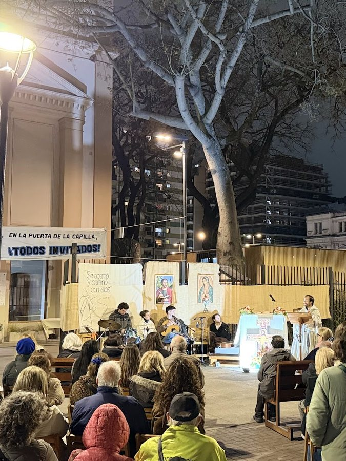
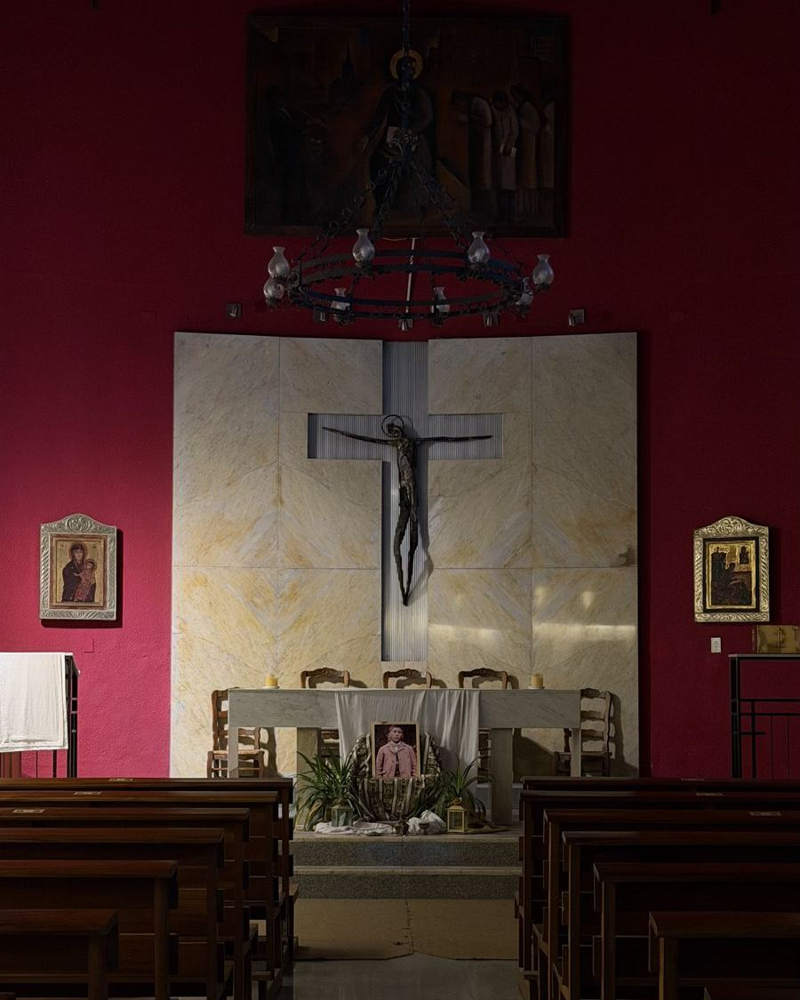
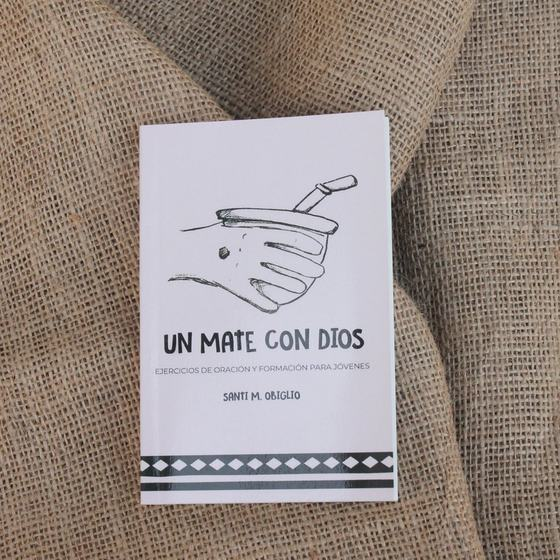
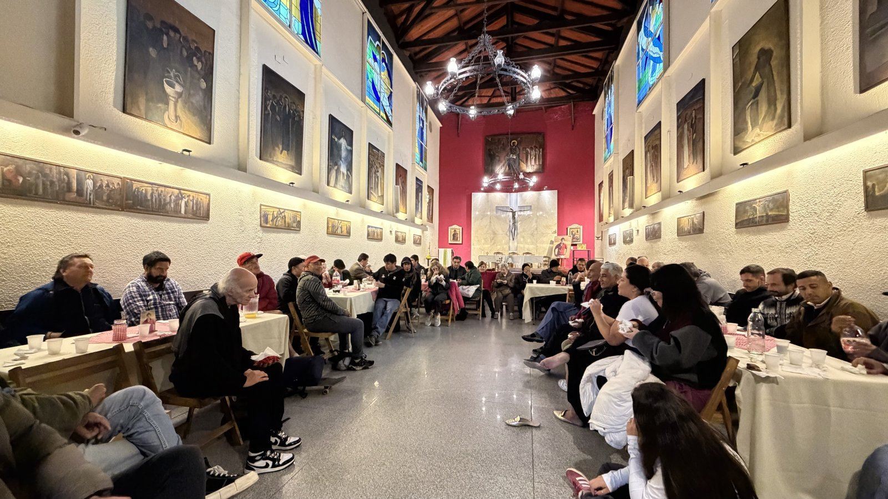

Parroquia San Lucas
capilla de jóvenes
capilla de jóvenes · desde hace 150 años
Seguimos a Jesús en medio del mundo
Una pequeña capilla en el corazón de Plaza Houssay, rodeada de facultades, soñada para acompañar a los jóvenes que por acá estudian, trabajan, buscan y peregrinan.
Paraguay 2150 · Plaza Houssay · CABA

Nosotros
Quiénes somos, lo que hacemos y los horarios.
Entrar
Proyecto Santuario
Un santuario de jóvenes camino a los 150 años. Conocé a nuestros santos jóvenes.
Entrar
Tienda Pastoral
Libros, rosarios, remeras y más.
Entrar
Colabora
Con tus dones, con tus manos o con tu aporte.
Entrar